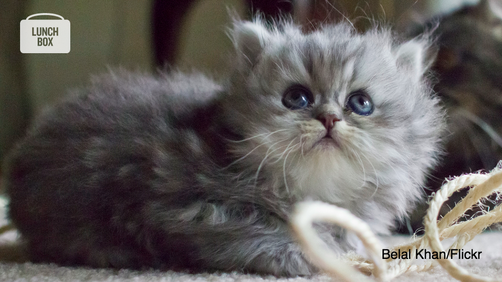
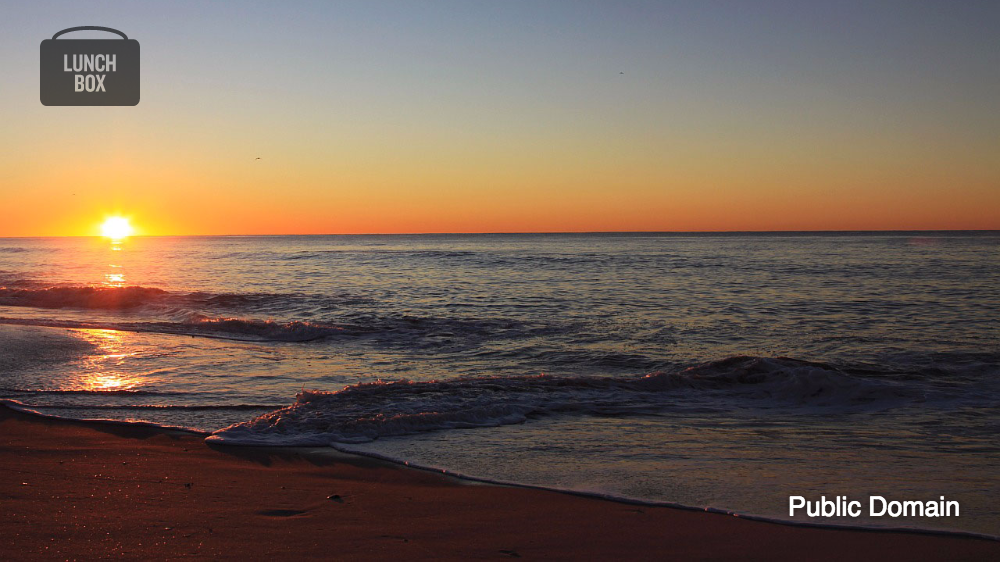
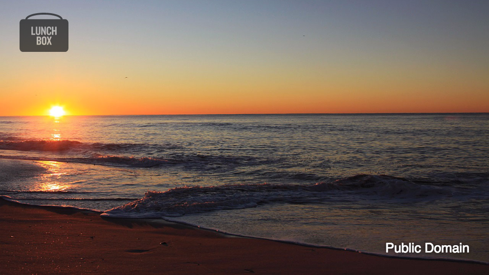
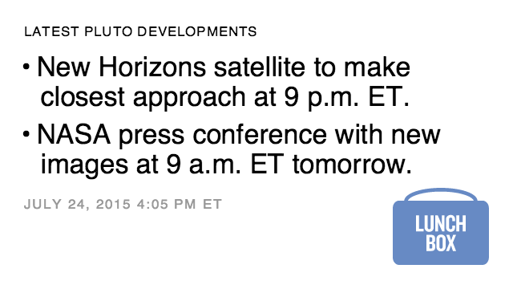
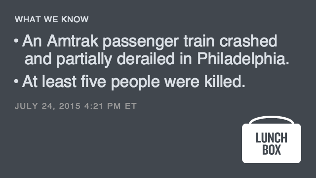
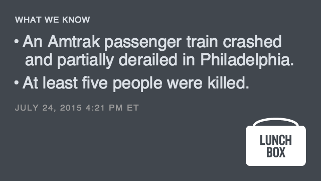
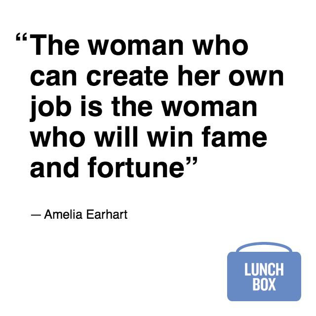
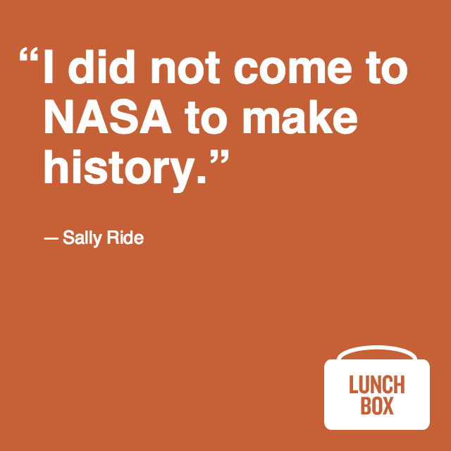
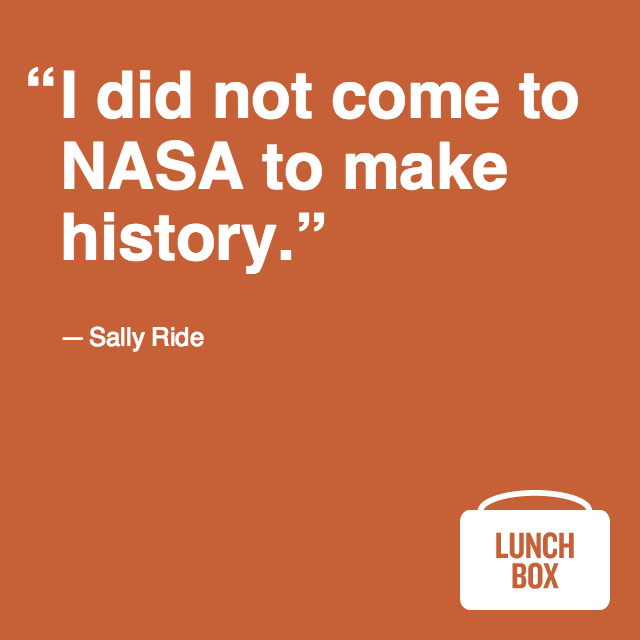

Lunchbox is a suite of tools to create images for social media sharing. It includes Quotable, Factlist and Waterbug. To customize Lunchbox for your organization, follow the directions on https://github.com/nprapps/lunchbox. To use Lunchbox, see guidelines below.
Usage and Guidelines
The instructions below presume you have a working copy of Lunchbox on your computer, either the demo downloaded above or customized by someone in your organization.
Waterbug
Creates a watermarked image with attribution.
How to use it
- Open Lunchbox and select Waterbug.
- Click 'Select file' and chose the source image from your computer. Alternatively, click URL and paste the URL for your image. Your image will replace the default image.
- Select the image copyright holder from the dropdown menu.
- Type in the photographer's full name.
- Type in the source when appropriate.
- Change 'Crop' option if you need a different format. Drag the image within the crop space to adjust what is visible.
- Adjust the text color to provide the most contrast against the image.
- Change the logo if you need alternate branding.
- Adjust the logo color to provide the most contrast against the image.
- Verify that all sharing guidelines are met.
- Click Save image to save to your computer.
Guidelines
To make photos source and attribution clear to users:
- Follow the sharing guidelines of your organization to ensure licensing and copyright rules are properly met.
- Waterbug is meant to create a watermarked image with attribution. If you need to share a list of facts or a quote, use the Factlist or Quotable tools.
Examples



Factlist
Factlist produces a branded image with a list of text bullets.
How to use it
- Open Lunchbox and select Factlist.
- Select and replace the sample bullet text with your own (press enter for a new bullet).
- Select and replace the sample headline text with your own.
- Adjust font size so the text fills the space comfortably.
- Change theme if you need alternate branding.
- Change aspect ratio if you need a different format.
- Optional: Hide timestamp.
- Click Save image to save to your computer.
Guidelines
To keep facts clear and understandable to users:
- Do NOT include links in the image. Save those for the tweet or Facebook post.
- For developing stories, include the timestamp so facts may be compared to future/past versions for updates.
- Factlist is meant to present facts as a bulleted item list. If you need to share a quote, use the Quotable tool.
Examples



Quotable
Quotable converts quoted text into an image.
How to use it
- Open Lunchbox and select Quotable.
- Select and replace the sample quoted text with your own.
- Select and replace the sample attribution text with your own.
- Adjust font size so the text fills the space comfortably.
- Change theme if you need alternate branding.
- Change aspect ratio if you need a different format.
- Optional: Hide quotation marks.
- Add attribution details for more context.
- Click Save image to save to your computer.
Guidelines
To make quotes most useful and understandable to users:
- Do NOT include links in the image. Save those for the tweet or Facebook post.
- Do NOT attribute a quote to a person if they did not make the statement. Treat the words you create with this tools as journalism—same rules and standards.
- Quotable is meant to present an attributed textual quote. If you need to share a list of facts, use the Factlist tool.
Examples


